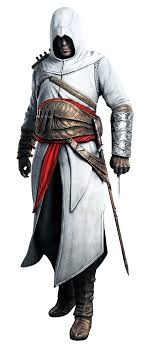

Assassin's Creed Codex
Ezio Auditore
A legendary Assassin from the Italian Renaissance.

Altaïr Ibn-La'Ahad
A Master Assassin from the 12th century.

Ratonhnhaké:ton (Conner) Kenway
Also known as Connor, which is a much easier to pronounce, Ratonhnhaké:ton stars as the first leading Assassin during the Colonial era in Assassin’s Creed III and also appears in Assassin’s Creed III: Liberation.

Haytham Kenway
Although Haytham technically isn’t an Assassin, he’s a Templar, he plays a key role in Assassin’s Creed Rogue – a prequel to ACIII.